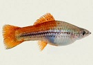

Swordtails
The green swordtail (Xiphophorus hellerii) is a species of freshwater/brackish fish in family Poeciliidae of order Cyprinodontiformes. A live-bearer, it is closely related to the southern platyfish or 'platy' (Xiphophorus maculatus) and can crossbreed with it. It is native to an area of North and Central America stretching from Veracruz, Mexico, to northwestern Honduras.
The male green swordtail grows to a maximum overall length of 14 centimetres (5.5 in) and the female to 16 centimetres (6.3 in). The name 'swordtail' is derived from the elongated lower lobe of the male's caudal fin (tailfin).

Male Swordtail

Female Swordtail
The green swordtail prefers swift-flowing, heavily-vegetated rivers and streams, but is also found in warm springs and canals. Omnivorous, its diet includes both plants and small crustaceans, insects, and annelid worms. Read more...